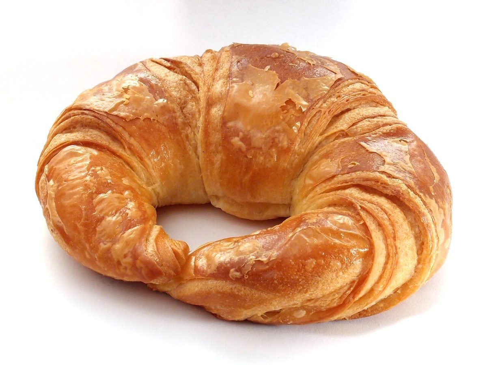
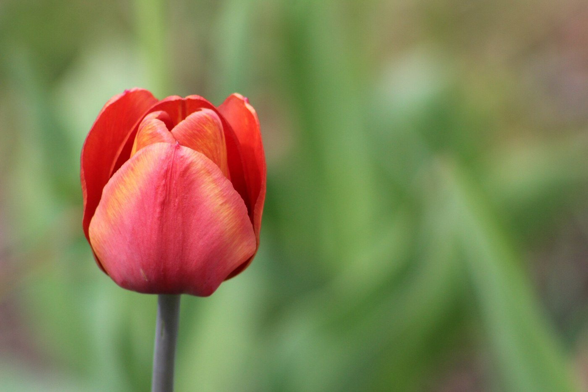
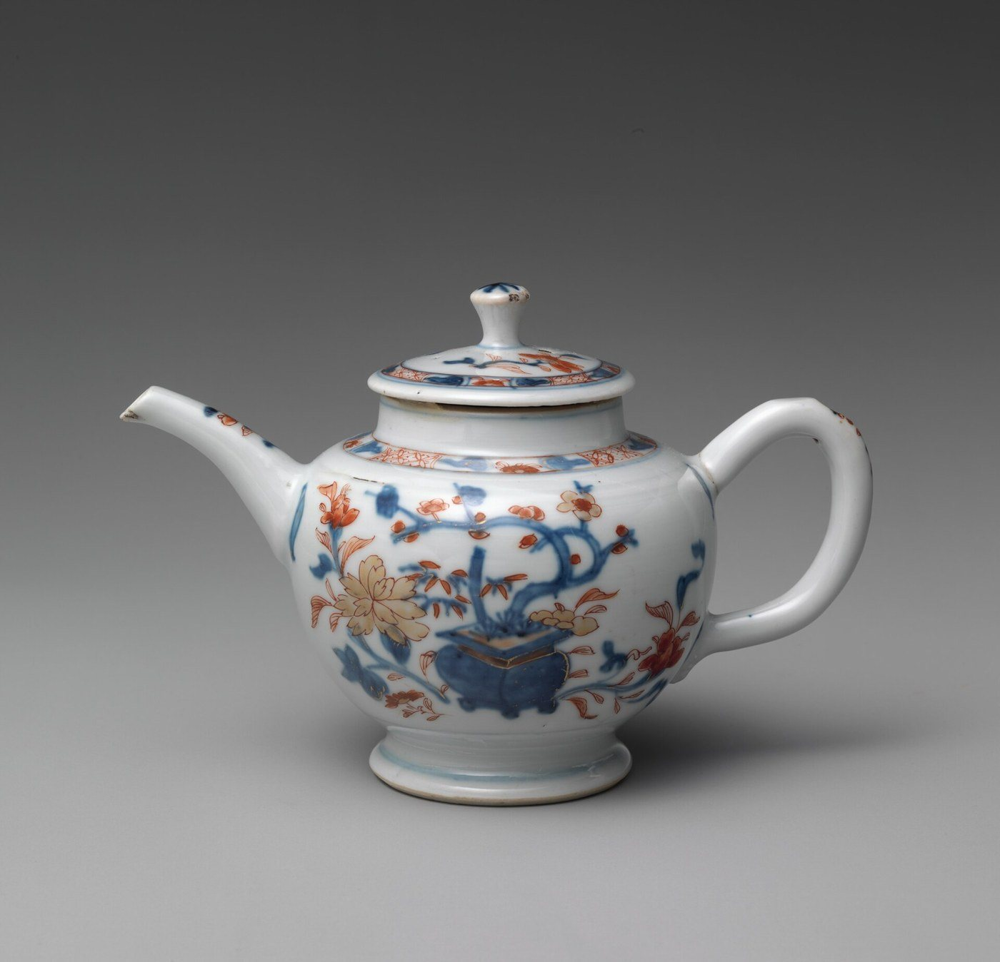
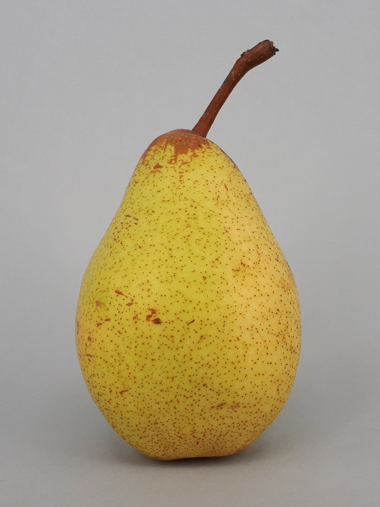
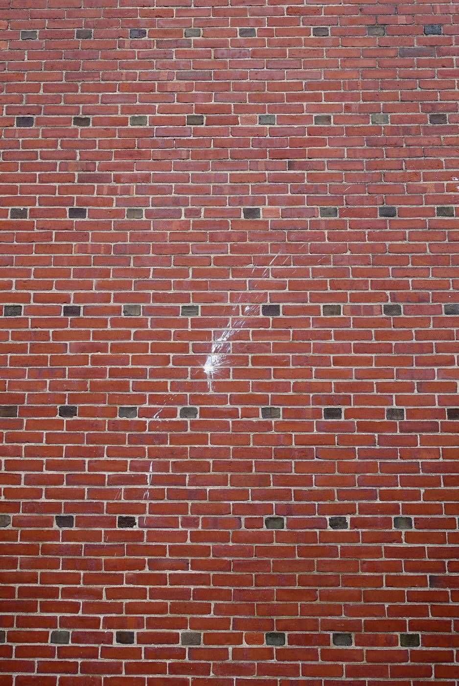

制作側の連想
ガーデンアーチを、部位ごとの配置図にしてみる
このサイトは、庭先に立つアーチを一枚の図にして作りました。六つの部位に番号をふり、上の図と並べています。制作側の連想で、お店の理念・由来とは無関係です。実際の製品の仕様を示すものでもありません。
凡例
六つの部位
- 1先端飾り頂上に立てる小さな飾り。アーチの一番高いところの目印になる部分。
- 2曲がり梁左右の支柱をまたいで半円を描く、アーチの主役になる部材。
- 3継ぎ手曲がり梁と支柱をつなぐ接合部。曲線がまっすぐな柱に変わる場所。
- 4支柱左右に立って全体を支える柱。くぐる人の両脇に並ぶ部分。
- 5横桟支柱のあいだに渡す横材。補強と飾りを兼ねる部分。
- 6差し込み足支柱の下端から地面へ突き出し、固定に使う部分。
ギャラリー(イメージ)
アーチ形の窓から、写真をのぞく







写真はすべてフリー素材のイメージです。お店のものではなく、お店で提供している商品や店内を示すものでもありません。
ご案内
お店のこと(確認できたものだけ)
| 所在地 | 〒419-0203 静岡県富士市鷹岡本町8-23 |
|---|---|
| 電話 | 準備中 |
| 営業時間 | 準備中 |
| 定休日 | 準備中 |
| ご予約 | 準備中 |
| 駐車場 | 準備中 |
| SNS | Instagram @maji_yacci |